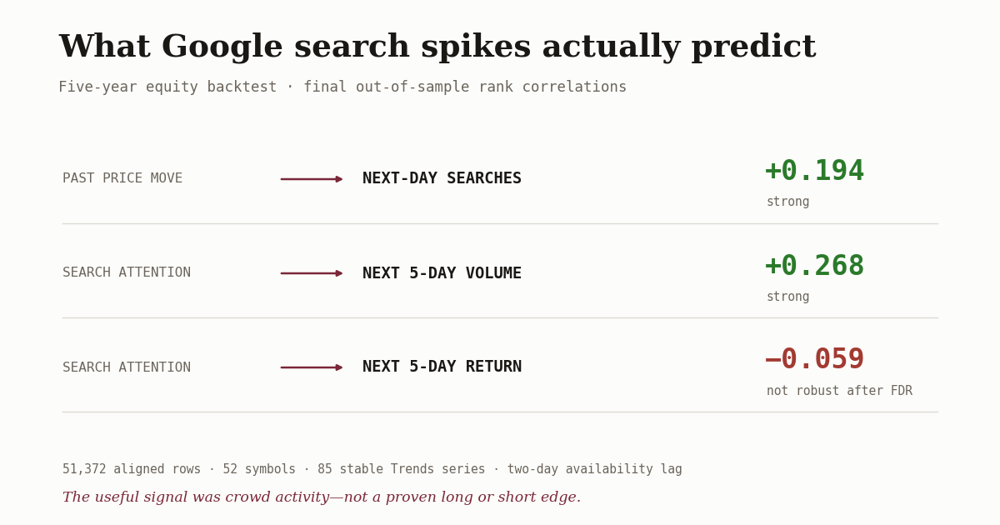
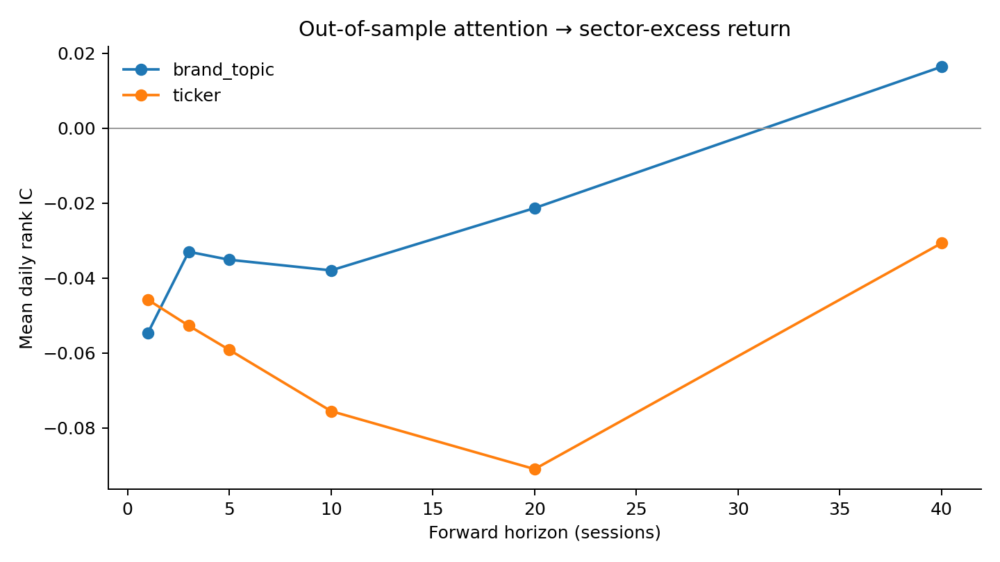
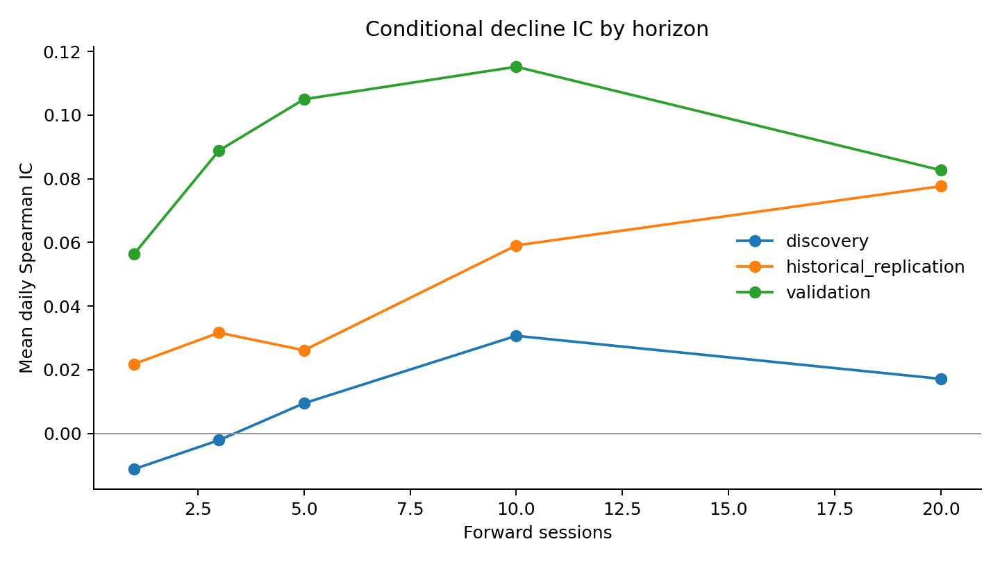

I Backtested Five Years of Google Searches Against Stocks. The Signal Wasn't Alpha.

There is a seductive trading idea hiding inside Google Trends: when retail searches for a ticker suddenly spike, buy the breakout — or fade the hype. Traders will happily take either rule if the equity curve goes up and to the right.
To find out which story holds up out of sample, I built a five-year backtest across the most liquid U.S. stocks each quarter, pulled daily Google Trends series for both ticker symbols and company topics, lagged every signal by two calendar days so the model couldn't peek ahead, and locked the final test window behind a 40-session embargo.
Google search spikes are mostly a reaction to stocks that already moved. Rising searches reliably predict heavier trading volume, and falling searches predict volume drying up — but neither direction clears the bar for directional alpha.
- Price leads search: Prior price moves strongly predict next-day ticker searches (+0.194 rank correlation) and brand-topic searches (+0.110).
- Search spikes predict volume, not alpha: Ticker search attention predicts next 5-day volume at +0.268, the strongest signal in the study.
- Contrarian return tilt fails the gate: High ticker attention correlated at −0.059 with next 5-day sector-excess returns (−0.57% top-vs-bottom quintile spread), but missed the pre-registered false-discovery gate (adjusted q = 0.115 vs. 0.10 threshold).
- Attention unwinds drain volume, not price: When recently spiked ticker attention cools off, next 5-day volume contracts sharply (−0.255), while returns drift slightly positive (+0.032).
Bottom line: Google Trends tells you whether the crowd is arriving or leaving. It does not tell you which way price goes next.

The question was backwards
Most people ask: do Google searches predict stock moves? That framing assumes search interest arrives first. Anyone who has watched a momentum squeeze knows the reverse causal chain is just as likely: price rips, screenshots circulate on X and Reddit, and retail Googles the ticker to see what they just missed.
So I pre-registered tests for both directions:
- Does abnormal search attention predict forward 5-day sector-excess returns, volume, or volatility?
- Do prior price moves predict next-day search attention?
If price moves before search volume reacts, your "leading" alternative data feed is just a slow speedometer.
The honest backtest kept trying to lie
The test panel ran five years, from July 25, 2021 through July 24, 2026. Each quarter, I ranked U.S. equities by trailing 126-session median raw dollar volume and selected the top 25 names — yielding 21 quarterly cohorts and 58 unique stocks (ETFs excluded, one share class per issuer).
For each stock, I pulled two daily Google Trends series: the exact ticker symbol (where unambiguous) and the canonical company topic. Each observation was z-scored against a rolling trailing window, lagged by two calendar days to prevent lookahead bias, and evaluated at the next session's open.
Returns were measured as 5-day forward stock returns net of each stock's sector ETF, ranked cross-sectionally within the active quarterly cohort, and evaluated across train, validation, and embargoed test splits using block bootstrapping, Newey–West standard errors, and Benjamini–Hochberg false-discovery-rate (FDR) control.
Those guardrails caught three bugs that initially made the backtest look much prettier than reality:
- ETFs hiding in the equity universe: The first pass admitted QQQ, TQQQ, and SQQQ because their security names didn't contain the literal string “ETF.” Filtered and rebuilt.
- Split-adjusted liquidity rankings: The initial cohort selector ranked historical dollar volume using split-adjusted prices rather than point-in-time raw prices and volumes. Rebuilt.
- Cached SerpApi responses masquerading as stability: My first sampling-stability check passed 109 of 109 windows — because SerpApi served cached Trends payloads. Forcing 109 fresh no-cache pulls caused five noisy series to fail the stability threshold, removing them from the panel.
Every time the backtest got less impressive, it got more honest.
The final clean dataset held 51,372 aligned ticker-day rows across 52 stocks and 85 stable search series, passing 11 pipeline unit tests and 15 independent verification gates.
Search is late
The sharpest result in the entire study ran in reverse: big stock moves strongly predicted next-day search spikes.
- Prior price move → brand-topic searches: +0.110 rank correlation.
- Prior price move → ticker searches: +0.194 rank correlation.
Both cleared multiple-testing correction with near-zero adjusted p-values. When a stock makes an outsized move, people Google it the next day — and ticker-symbol searches spike nearly twice as hard as general company-topic searches as traders look up the quote.
Forward-looking, search spikes reliably predicted participation, not direction. High search attention preceded five sessions of elevated trading volume:
- Brand-topic attention → next 5-day volume: +0.194.
- Ticker attention → next 5-day volume: +0.268.
Brand-topic attention also predicted higher 5-day realized volatility (+0.082), while ticker attention's volatility link faded after FDR correction. Across both series, the takeaway is straightforward: search volume is an activity thermometer. Something moved the stock, retail noticed, and the tape stayed crowded for the next week.
Is it a counter-signal? Almost. Not enough.
On the surface, fading ticker search spikes looked tempting: in the out-of-sample test, high ticker-search attention carried a −0.059 rank correlation with next 5-day sector-excess returns, and the top attention quintile lagged the bottom quintile by 0.57% over five sessions (unadjusted p = 0.047).
Once you apply honest multiple-testing controls across all outcomes, horizons, and term types, that edge doesn't clear the bar. The FDR-adjusted q-value landed at 0.115 — above the pre-registered 0.10 cutoff — and the quintile spread's bootstrap confidence interval touched zero. Brand-topic attention was weaker still (−0.035, adjusted q = 0.199).
Abnormally high ticker searching is an overheating warning. The crowd is late, but this panel does not prove that shorting the crowd pays after friction.
Because the directional alpha gate failed, the portfolio simulator stayed off. Zero strategies promoted to live trading is a valid research outcome, not a missing section.

What if attention falls instead?
That left a natural follow-up hypothesis: maybe the initial search spike doesn't trigger the reversal, but the attention unwind does — when retail gets bored and stops searching. I locked a second test on the same 51,372-row panel (zero new network calls): among stocks that hit their trailing 80th percentile of search attention in the prior 14 days, did a steeper 7-day-vs-21-day drop in searches predict worse 5-day sector-excess returns across 1,011 eligible dates?
The sell-off hypothesis failed outright. The pooled 5-day rank correlation was +0.032 — positive across discovery (+0.009), validation (+0.105), and historical replication (+0.026). The steepest-decline quintile actually beat the shallowest-decline quintile by 0.40% over five sessions.
That doesn't make falling search volume a buy signal either: controlled Fama–MacBeth regressions were pure noise (p = 0.820), the 5-day event study (+0.17%, p = 0.482, 95% CI −0.25% to +0.72%) straddled zero, and a 60-session placebo test also tripped significance.
Rising attention predicts more participation. Falling attention predicts less participation. Neither reliably predicts price direction.
Where the unwind signal shone was volume contraction: declining ticker attention correlated at −0.255 with next 5-day volume, holding negative across discovery (−0.265), validation (−0.190), and replication (−0.293), passing 22 unit tests and 82 verification checks.

The useful signal is “don't chase”
In a live trading rig, Google Trends doesn't belong in the alpha engine choosing longs or shorts. It belongs in the risk and execution layer as a regime filter:
- Position sizing: A search spike flags a crowded tape with elevated volume and wider outcome dispersion over the next five sessions.
- Entry discipline: If price already broke out and ticker searches just surged, you aren't early — you're reading yesterday's move in the search bar.
- Liquidity decay awareness: Once a hot name's search volume rolls over, expect participation to dry up (−0.255 volume correlation) and spreads to widen.
- Research triage: Search spikes tell an autonomous research agent which tickers need immediate news scraping, not which direction to trade them.
A dataset can be statistically predictive and still carry zero directional alpha. If I had only tested returns, I would have written Google Trends off as noise; if I had skipped multiple-testing corrections on the −0.059 contrarian tilt, I would have deployed a fake edge. Testing both directions and enforcing the FDR gate saved capital.
Method note: Google Trends was accessed through SerpApi because Google's official API was not generally available. The full run required roughly 1,300 normalized Trends pulls plus 109 fresh stability re-pulls. The equity universe is reconstructed inside Alpaca's current active-and-inactive exchange-listed coverage; it is not a delisting-complete historical U.S. security master. Results should not be generalized to the entire market without that caveat.
Disclosure: this is research, not investment advice. I hold and trade some securities that appeared in the study. No portfolio was deployed from this signal.
Newsletter
Get the next post by email.
One email when I publish something new. No spam, no fixed schedule, unsubscribe anytime.